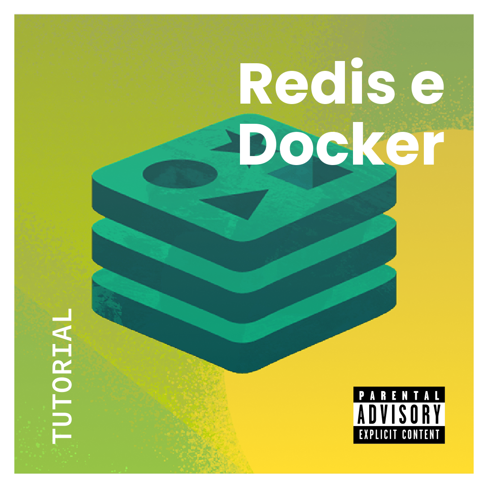

Introdução
O Redis é sistema de armazenamento de dados e tem, dentre muitas funcionalidades, a capacidade de operar como um banco de dados NoSQL, baseado no princípio chave-valor. O acrônimo Redis vem de Remote Dictionary Server (ou servidor de dicionário remoto). O Redis é capaz de suportar diferentes tipos de dados, e uma de suas principais vantagens é a sua performance, pois todos os dados de um servidor Redis residem na memória RAM da máquina hospedeira. Além disso, quando usado como banco de dados, permite a persistência dos dados em disco.
No presente tutorial, criamos um exemplo de como utilizar o Redis como banco de dados.
Docker image
Este tutorial utiliza a versão 7.0-alpine da imagem do Redis. Verifique mais detalhes sobre a imagem do Redis em Docker Hub.
Criando servidor Redis
Para que uma instância do Redis seja criada, é necessário o uso de um arquivo de configuração. Exemplos de arquivos estão disponíveis na documentação oficial do Redis (Documentação sobre as configurações). Deve-se utilizar o arquivo de configuração de acordo com a versão da imagem escolhida.
Arquivo de configuração
Crie um arquivo chamado redis.conf e copie as informações do arquivo de configuração padrão, fornecidas na documentação oficial.
Ou, caso deseje fazê-lo via linha de comando, escreva a seguinte linha no seu terminal:
curl "https://raw.githubusercontent.com/redis/redis/<version>/redis.conf" > redis.confOnde <version>, na URL especificada, deve ser substituído pela versão escolhida do Redis.
Configurações
Altere a linha do arquivo de configuração, que contém a palavra requirepass e, adicione uma senha.
requirepass "anyPassword"Durante os testes que realizei, ao tentar subir a instância do Redis, me era apresentado a seguinte mensagem de aviso:
Warning: Could not create server TCP listening socket ::1:6379: bind: Address not availableEsse erro ocorre pois o servidor Redis não tem acesso as interfaces de rede necessárias. Para solucionar esse problema, é preciso alterar a linha que contém a palavra bind, na seção de rede, do arquivo de configuração do servidor. Pesquise e reescreva a linha do seguinte modo:
bind 0.0.0.0Configurações Docker
Criando uma rede, que será usada para comunicação com o servidor Redis.
docker network create redisA partir da rede criada anteriormente e do arquivo de configurações do Redis, podemos criar o container:
docker run -it --rm --name redis --net redis -v ${PWD}:/etc/redis/ redis:7.0-alpine redis-server /etc/redis/redis.confListando cada opção e flag usada anteriormente:
-it: indica que desejamos um terminal interativo;--rm: usado para remover o container após a sua finalização;--name: usado para atribuir um nome ao container;--net: informa a rede a ser usada;-v: usado para montar um volume do tipo bind, entre o diretório atual da máquina e o container.
No final da linha temos o caminho, já no container, para o arquivo de configuração usado no servidor.
Criando um Volume
Para que os dados possam persistir, será necessário o uso de um volume. Que neste caso, seja criado e gerenciado pelo próprio Docker. Nós podemos criar o volume e manipula-lo por meio da CLI do Docker.
docker volume create redisApós a criação do volume, caso a instância criada anteriormente ainda esteja em execução, finalize-a, e depois crie outra instância, mas agora montado o volume criado anteriormente.
docker run -it --rm --name redis --net redis -v ${PWD}:/etc/redis/ -v redis:/data/ redis:7.0-alpine redis-server /etc/redis/redis.confA segunda flag -v é usada para montar o novo volume, que será usada para persistência dos dados.
Exemplo em Go
Com o Go instalado, crie um novo módulo com:
go mod init clientUm arquivo chamado go.mod deve ser gerado.
O código a seguir é um simples exemplo de como utilizar o Redis como um banco de dados. Crie um arquivo (aqui eu chamarei o arquivo de client.go) e adicione o seguinte código:
package main
import (
"context"
"fmt"
"github.com/redis/go-redis/v9"
)
var ctx = context.Background()
func main() {
rdb := redis.NewClient(&redis.Options{
Addr: "redis:6379",
Password: "anyPassword",
DB: 0,
})
// Consultando se a chave já existe
myKey := "keyName"
myValue, err := rdb.Get(ctx, myKey).Result()
// Caso não exista
if err == redis.Nil {
// Cria a chave
fmt.Printf("A chave %s não existe.\n", myKey)
err = rdb.Set(ctx, myKey, "anyValue", 0).Err()
if err != nil {
fmt.Println("Erro ao criar par chave-valor.")
}
// Caso seja apresentado outro erro
} else if err != nil {
panic(err)
// Caso a chave tenha sido encontrada
} else {
fmt.Printf("Chave = %s e valor = %s.\n", myKey, myValue)
}
}Para lidar com as dependências, rode:
go getO Go deve gerar um arquivo chamado go.sum, que é um arquivo que guarda informações da dependências.
Criando o container do client
Para executar o programa client, devemos utilizar a imagem do golang. Neste caso eu utilizei a versão 1.20-alpine. Ao rodar a linha abaixo, é necessário que o diretório atual seja o diretório do código fonte do programa client.
docker run -ti --net redis -v ${PWD}:/client -w /client golang:1.20-alpineFoi utilizado a flag -w ela indica o diretório de trabalho adotado. Caso você queira verificar os arquivos disponíveis no diretório do container, rode um ls e você deverá ver os arquivos criados anteriormente.
Dentro do container, rode:
go installAssim as dependências serão instaladas. Logo em seguida, compile o client rodando:
go build client.goE, para finalizar, execute o client com: ./client.
A saída esperada é:
A chave keyName não existe.Caso você tente executar o client novamente, você deverá ver a seguinte mensagem.
Chave = keyName e valor = anyValue.Encerre a instância do servidor do Redis e cria uma nova. Ao executar o client novamente, você verá que o par chave-valor ainda existe.